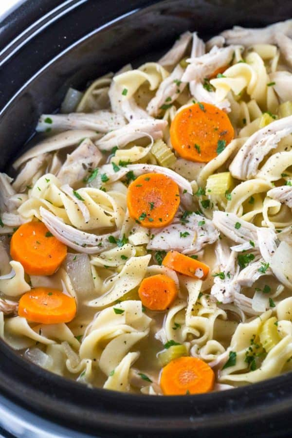

Chicken Soup Recipe

When the cold season hits make this easy slow cooker chicken noodle soup recipe by adding lean white meat, vegetables, stock, and pasta to your crock-pot.
Ingredients
Carrots
Celery
Chicken Broth
Boneless Skinless Chicken Breasts
1tbs of Salt+Pepper
Egg Noodles
- Chop carrots and celery
- Mix carrots, celery, chicken, and cover with chicken broth.
- Stir in Salt and Pepper
- Cook on low for at least 8 hours, or high for 4
- Stir in egg noodles until Al Dente, then serve!